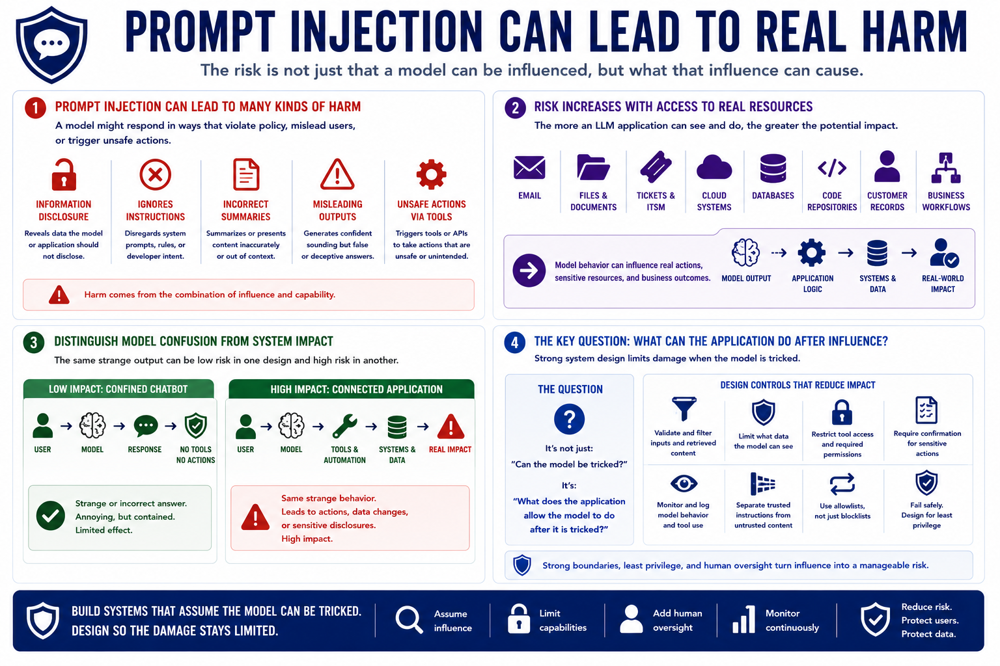

Prompt Injection
What Can Go Wrong?
Connecting to LMS... Progress: in progress
Version 1.0 | Date: 2026-06-16 | AI security guidance evolves quickly. Verify current recommendations against official project, vendor, and security guidance.

Narration
Prompt injection can lead to several kinds of harm. A model might reveal information it should not disclose, ignore application instructions, summarize content incorrectly, produce misleading outputs, or take unsafe actions through connected tools.
The risk increases when an LLM application has access to email, files, tickets, cloud systems, databases, code repositories, customer records, or business workflows. In those designs, model behavior can influence real actions or sensitive resources.
Teams should distinguish model confusion from system impact. A strange answer may be low impact in a simple chatbot. The same behavior can be high impact if the application passes model output to tools, workflow automation, approvals, or downstream systems.
The most important question is not only whether the model can be tricked. It is what the application allows the model to do after it is tricked. Strong system design limits the damage when the model processes hostile or confusing input.